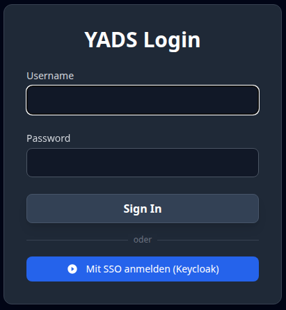
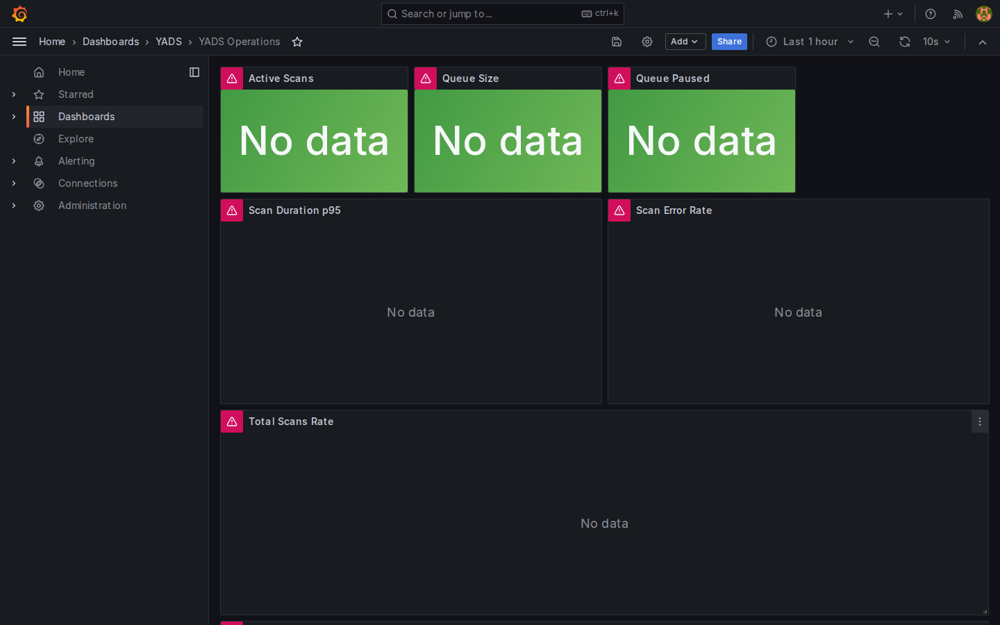
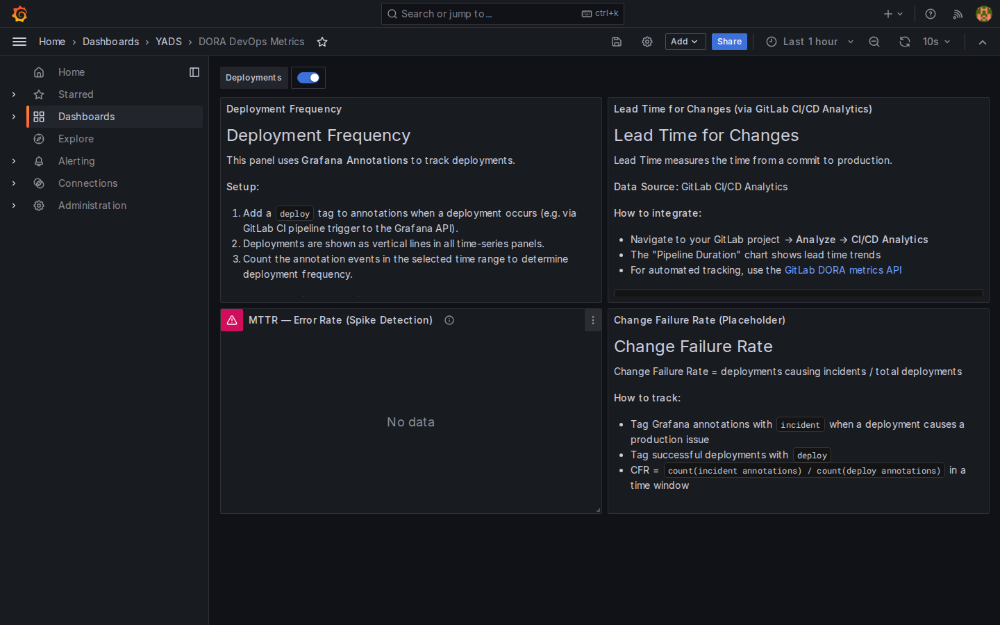

The All-in-One Reconnaissance Platform. Visualize threats, track your assets, and secure your infrastructure with cutting-edge precision.
Finding prioritization, step-by-step remediation, natural language search, and AI-generated analytics risk scoring — OpenAI, Anthropic or Ollama (BYOK) with rule-based fallbacks.
Dedicated PQC readiness report analyzing all cryptographic assets. Generates a Cryptography Bill of Materials (CBOM) in CycloneDX format for NIS2/DORA compliance and quantum-safe migration planning.
New modules: Email Security (SPF/DKIM/DMARC), HTTP Headers, Cookie Analysis, CORS, Cert Mismatch, Threat Intelligence (AbuseIPDB/OTX/VirusTotal), JS Secrets, Git Exposure, Subdomain Takeover, Shodan/Censys.
Every scanner module now has its own report page with PDF and Excel export. AI-powered risk scoring enriches the analytics view with Threat Intel, Nuclei findings, and port exposure data.
D3.js force-directed graph tracing attacker movement from open ports through services to critical findings. Complemented by an attack surface heatmap view with subdomain and exposure analytics.
Complete English and German UI, PDF reports, Excel exports, AI outputs, and scan result labels. Language preference is user-configurable per profile and persists across sessions.
Automatic subdomain and infrastructure discovery — including recursive scanning, passive reconnaissance techniques, and automatic queuing of newly discovered assets for scanning.
Scan errors are automatically detected via Redis log monitoring and surfaced as a tenant badge. Users can submit bug reports directly from the interface — no external tools required.
Implemented community feature request: toggle between dark and light theme with one click in the navigation bar. Theme preference is stored per user across sessions.
Keycloak integration with OpenID Connect. Role-based access via LDAP groups, multi-tenant realm support, and seamless SSO login — or keep local auth for standalone deployments.
Tamper-proof security audit log with SHA-256 hash chain (DORA EU Art. 10). 5-year cold storage via MinIO S3 with ILM lifecycle policies. Verifiable, exportable audit trail for regulators.
Integrated Grafana dashboards (Operations, DORA Metrics), Prometheus metrics, Loki log aggregation, and MinIO cold storage — deployable as bundled Docker profiles or connected to your existing stack.
Automated discovery and cataloging of all digital assets across domains, subdomains, and cloud infrastructures.
Continuous monitoring for CVEs, misconfigurations, and exposed services with instant security scoring.
Interactive network graphs reveal relationships and attack paths that traditional lists miss.
Keycloak OpenID Connect integration with multi-tenant realm support, LDAP group mapping, and flexible auth modes — bundled or external IdP.
Tamper-proof audit log with SHA-256 hash chain. 5-year cold storage via MinIO S3. Built for DORA EU Art. 10 regulatory requirements.
Grafana operations dashboards, Prometheus metrics, Loki log streaming, and configurable alert rules — deployable as optional Docker Compose profiles.

The "Spiderweb" view mapped across all active targets.

Manage all your assets with security scores, tags, and bulk operations.

Deep insights into technology drift and infrastructure vulnerabilities.

Visualize technology distribution and detect stack drift across your infrastructure.

Visual OSINT for unauthorized brand and logo usage detection.

Professional PDF reports with cover page, table of contents, chapter intros, and one-click ZIP export for compliance audits.

Create fully customized reports with Markdown templates and 200+ dynamic variables.

AI finding prioritization, step-by-step remediation, natural language search, and AI-generated risk scoring in Analytics — OpenAI, Anthropic, or Ollama.

Post-Quantum Cryptography assessment with CBOM (CycloneDX). Identifies all cryptographic assets and their quantum-safe migration readiness for NIS2/DORA.

Aggregated findings from all 19+ scanner modules with severity filters, status tracking (Open/Acknowledged/Fixed), analyst notes, and CSV/Excel export.

19+ independent scanner modules with configurable scan profiles. Select exactly which modules run per target — DNS, SSL, Nuclei, Threat Intel, Ports, Secrets, and more.

One-click SSO login via Keycloak. Supports OIDC Authorization Code Flow with multi-tenant realm separation and group-based role mapping.

Real-time Grafana operations dashboard showing active scans, queue depth, worker load, error rates, and live log stream from Loki.

DORA EU compliance dashboard with Deployment Frequency, Lead Time, MTTR, and Change Failure Rate — backed by a tamper-proof SHA-256 hash-chained audit log.
Ideal for security enthusiasts, researchers, and small labs.
For teams, MSPs, and enterprises with compliance needs.
Find all details in our detailed edition comparison.
Find all module details in our Documentation.
The next major development block: native support for cloud-native deployments on GKE (Google Kubernetes Engine) and AKS (Azure Kubernetes Service) — with auto-scaling worker pools, KEDA-based event-driven scaling, and Azure AD integration.
Autopilot clusters with automatic node scaling. Horizontal Pod Autoscaler for worker pools based on queue depth.
KEDA integration for event-driven scaling based on Redis queue depth. Azure AD Workload Identity for secure, keyless authentication.
Worker pods scale automatically with scan load — zero workers at idle, hundreds at peak. Pay-per-use for enterprise deployments.
YADS was born from a vision for comprehensive transparency. It is NOT intended to be the ultimate solution, but serves as an experiment and toolkit for exploring new ideas in Domain and Attack Surface Monitoring.